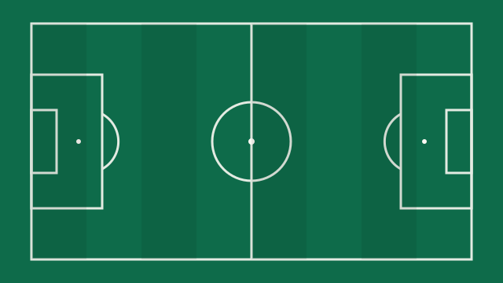
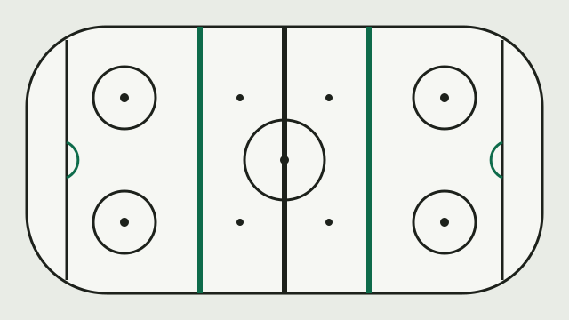
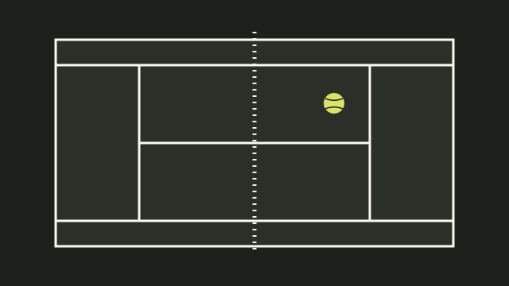
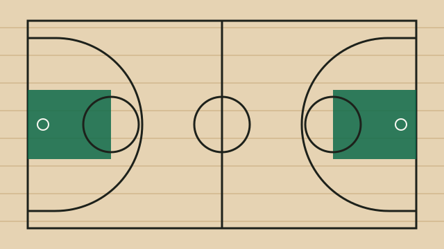
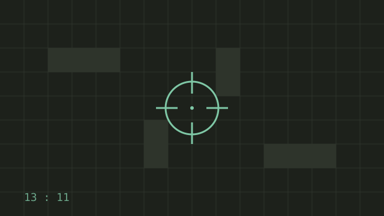
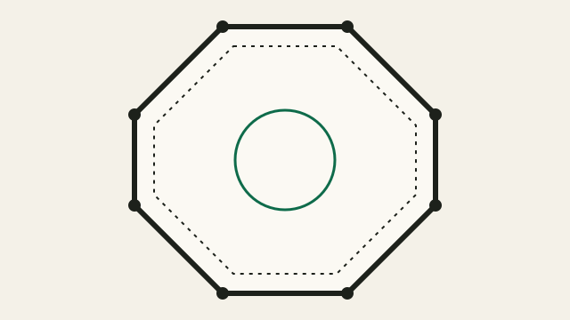

FinSearch / Ставки на спорт
Ставки на спорт
Как устроены рынки в каждом виде спорта и что проверить перед ставкой

Ставки на футбол
Как устроены основные рынки в футболе — исход, двойной шанс, тоталы, «обе забьют», форы — и что проверить перед ставкой.

Ставки на хоккей
Главная ловушка в хоккее — разница между исходом в основное время и с учётом овертайма. Разбираем рынки КХЛ и НХЛ.

Ставки на теннис
Двухисходный вид спорта с большим числом матчей. Разбираем рынки, влияние покрытия и что будет со ставкой, если теннисист снимется.

Ставки на баскетбол
В баскетболе почти не бывает ничьих, а основные деньги ставят на форы и тоталы. Разбираем, как их читать и что учитывать.

Ставки на киберспорт
Как устроены ставки на CS2 и Dota 2: формат BO1 и BO3, ставки на карты, форы по раундам и почему важен маппул.

Ставки на ММА и бокс
Разбираем рынки в ММА и боксе: победа, способ победы, тотал раундов — и почему отмена или замена боя важна для ставки.